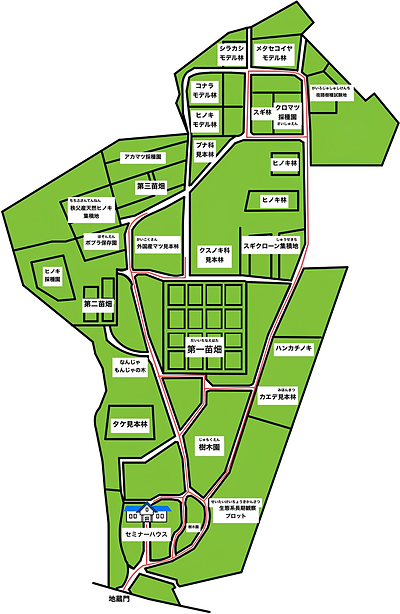

<body>
<div id="distanceUI">距離取得中...</div>
<div id="foundUI">発見！</div>

<canvas id="mapCanvas" width="600" height="918"></canvas>
<button id="toggleMap">MAP ON</button>
<a-scene
    vr-mode-ui="enabled:false"
    embedded
    arjs="sourceType:webcam; facingMode:environment;">
    <a-assets>
        <a-asset-item
            id="bombModel"
            src="Bomb.glb">
        </a-asset-item>
    </a-assets>
    <a-camera
        gps-camera
        rotation-reader>
    </a-camera>
</a-scene>
<script src="script.js"></script>
</body>